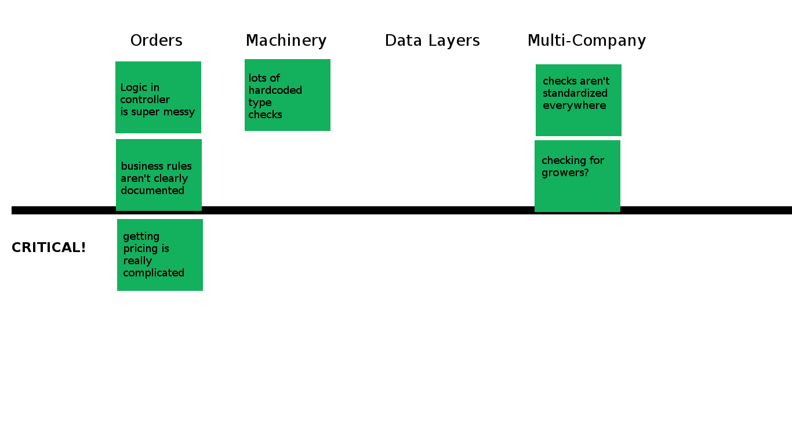

Managed
Technical
Debt
what is technical debt anyway?
can be bad code
lack of documentation
no automation
debt implies investment

like borrowing
from the bank?
 technical debt is like
technical debt is like
borrowing from the mafia
but you have to take some risk,
incur some debt
in order to achieve anything.
everybody has some technical debt
the problem is when it is unmanaged
you need visibility on the problem
literal visibility
managing debt with post-its
x-axis (on top) is categories / features
y-axis is problems / debt

when you find a new problem, add a post-it
when you encounter a problem
that's already on the board
you add an X on the post-it
3 strikes and you refactor
That post-it moves to the bottom of the list, becomes priority
features with the longest list of debt become priority
some final words from mathias verraes about managing technical debt
1. when introducing new debt, estimate cost/benefit
2. if a new solution isn't optimal, understand what would be
and how we would eventually evolve toward the optimal solution
3. document the debt. that's the point of the post-its
4. don't introduce debt on top of debt
5. existing debt is paid off as soon as there's a clear need
(that's the point of the 3 strikes / refactor rule)
we all know that orders is the worst.
but lots of other things are really bad
does this mean we have to stop and ...

FIX ALL
THE THINGS?!?
NO
big refactors almost always
take longer than estimated
don't actually fix everything
cause new problems
and make everybody sad
life of a project
1

2

2

2

2

every time we touch the code, we hit trouble
so we start clearing the brush, only where we hit it
2

sometimes these incremental refactors are tiny!
fix one method
remove one object
add one repository
document one complex thing
2

then we start to reuse things we just cleaned up
2

and that's how we fix orders
(and everything else) without
starting over from nothing